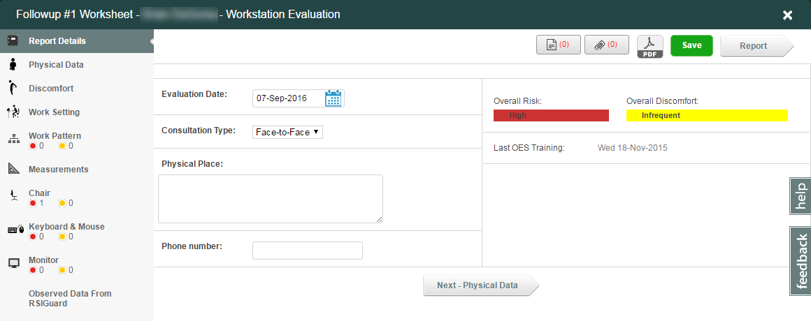
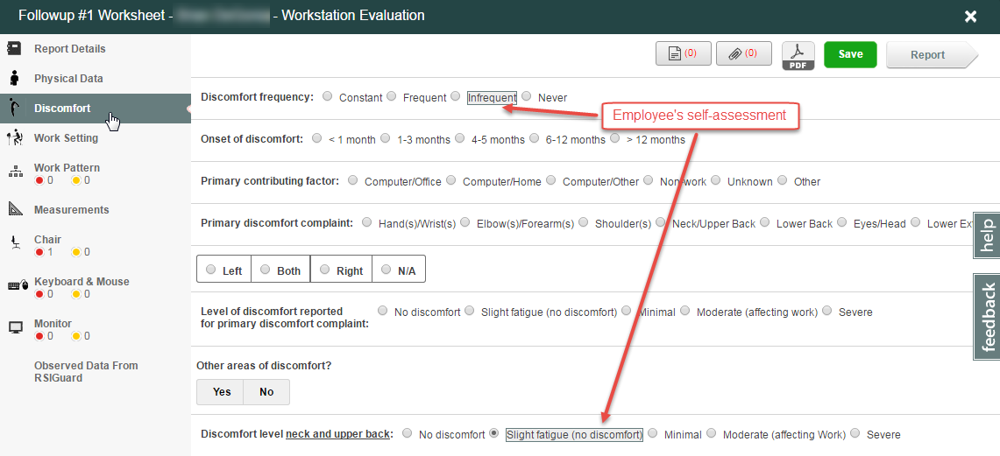
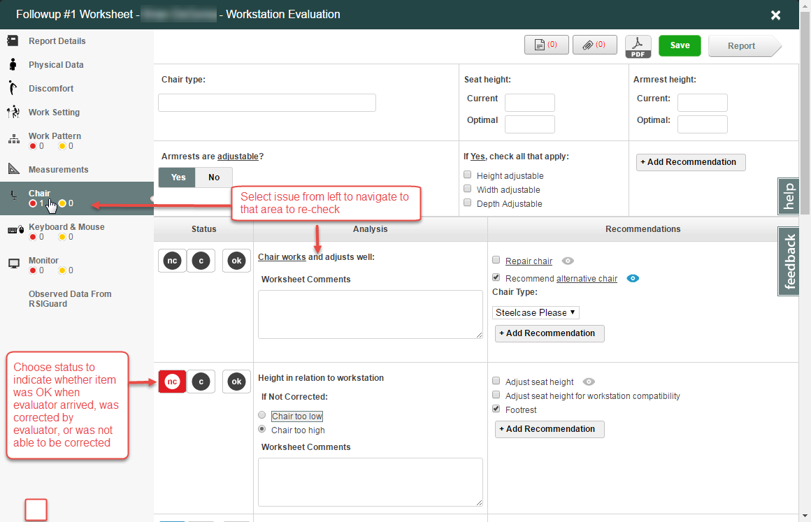

Case Manager provides a rich ergonomic evaluation worksheet that has been developed and refined based on feedback and input from ergonomic specialists, users and actual field use. The worksheet has been designed to work across devices including desktop & notebook computers as well tablet computing devices such as the iPad. The worksheet appears full screen and is divided into sections shown in the left-hand navigation.

Each section of the worksheet focuses on one particular part of the evaluation. Information collected during the user's self-assessment & training is indicated in the worksheet by highlighting the user's response. This allows the evaluator to compare the user's response to what is observed or communicated during the evaluation. For each factor and question, the evaluator can mark the response that best fits what is being observed, and any corresponding issues & facts are automatically updated in the OES.

Analysis sections in the worksheet provide the ability to show the status of each issue & fact as OK, Corrected or Not Corrected. Not correct and corrected items show in the left navigation area, so you can quickly navigate and re-check items. Evaluators can specify during their analysis whether the item was OK when they arrived, was corrected by the evaluator or was not able to be corrected.

For each issue & fact, a set of recommendations can be selected by the evaluator to be included in the evaluation report. Each recommendation in the worksheet has a corresponding "report" version, which can be seen by clicking the "eyeball" to the right. This allows for precise text in the worksheet where space is limited while allowing you to have a more descriptive recommendation that will be part of the report. An evaluator can customize each recommendation to meet their specific need. For each recommendation you may attach documents or photos that will be included in the report. Users on iPad will be able to take a photograph to upload for the report.
Optional elements in the worksheet will depend on the worksheet configuration.
Buttons: